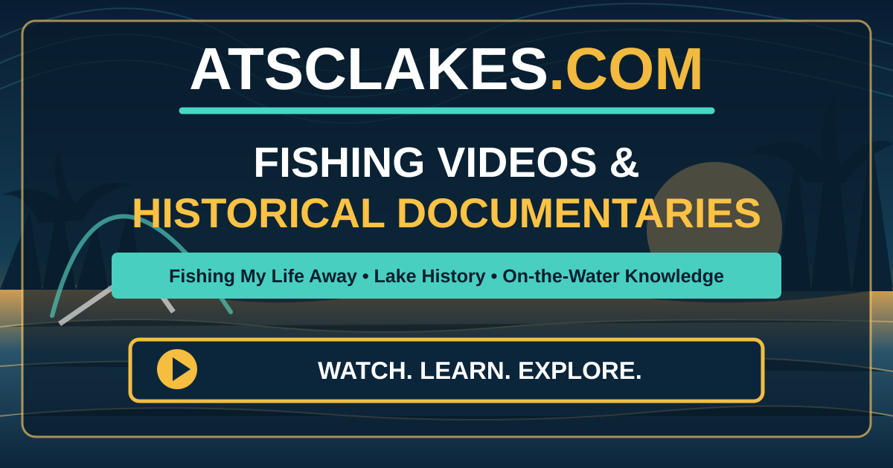

FISHING MY LIFE AWAY · SANTEE COOPER HISTORY
Fishing Videos & Historical Documentaries
On-the-water fishing adventures, practical techniques, boat equipment, and the history behind the Santee Cooper lakes. Explore the library below, then watch each film on its original YouTube channel.
EXPLORE THE VIDEOS
Loading video links…
Watch on YouTube. Videos are not stored or played on ATSCLakes.com. Each listing opens the original video on YouTube in a new tab. Historical films are credited to their publishers.